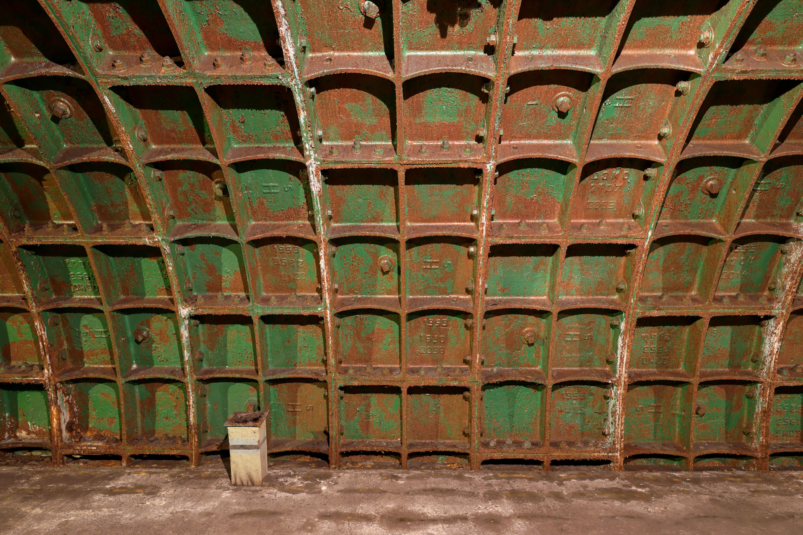
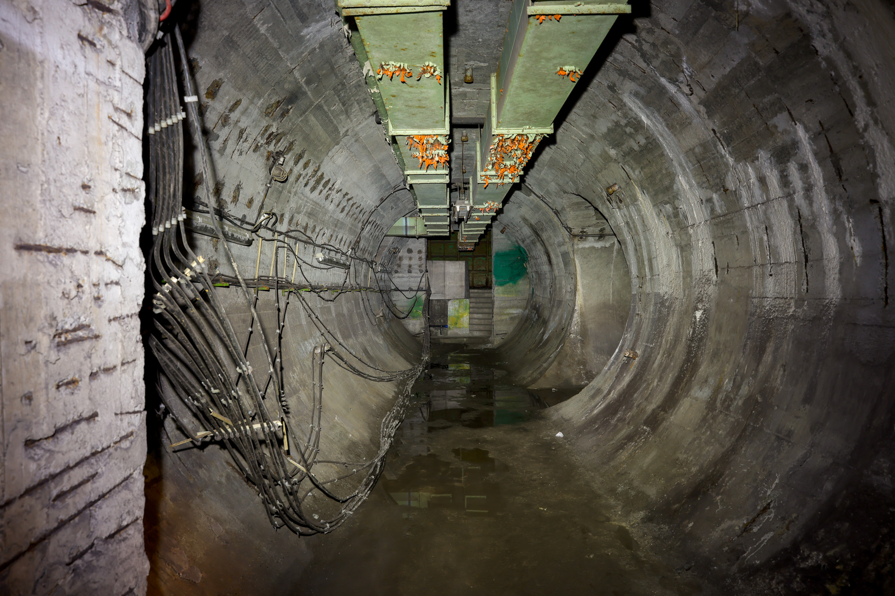

In the center of Budapest, just three blocks from Kossuth Square and the ornate Országház parliament building, is a fairly unassuming abandoned building. Within lies an entrance to the F4 “Rákosi” bunker, a 3,500 m² facility 60 meters deep underground, originally built as a temporary shelter to protect 250 of Hungary’s political elite, including the titular Hungarian Workers' Party secretary general, Mátyás Rákosi.
There are three entrances to this forgotten bunker: a courtyard entrance inside the previously mentioned abandoned building, a ventilation shaft in Szabadság (Liberty) Square, and an access tunnel leading directly from the M2 subway line.
Entering through the courtyard reveals 16 flights of stairs that take you down to the bunker level and provide access to the H-shaped complex. Blast-proof doors, water drainage, and a very damaged elevator shaft greet you at the bottom of the stairs.
The "F" in the bunker's name comes from "föld alatti", which means "underground" in Hungarian. The "4" refers to the work area of the nearby M2 metro, which was being constructed at the same time in the early 1950s. The bunker was unfortunately never completely finished according to the original plan due to budget limitations, but it was refitted in the early 1960s with the two-story layout you see in these photos.



Electricity is still supplied to the bunker, as it is apparently still checked by security and maintenance staff on a weekly basis. Where the lights still work, you get to see the bare bones of the cylindrical metal support structure. Where they don't, you rely on torchlight to explore the rest of the tunnels. As you explore, echoes of every noise you make bounce down each tunnel and back to you, along with the constant drip of water leaks. Even if you are alone down there, it doesn't always sound like it.
For more information about the F4 “Rákosi” bunker, checkout Balázs Szabó's well researched article Instead of legends, facts about F4, Rákosi's bunker (via Google Translate).